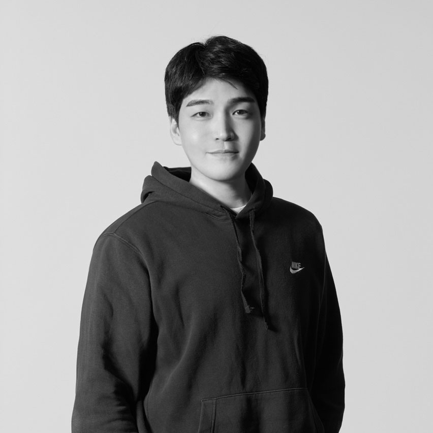

지금 필요한 일은
정확히 무엇일까?
요청받은 결과물과 그 결과물이 필요한 이유를 함께 봅니다. 대상과 상황을 이해한 뒤 기획의 범위를 정합니다.
고객의 질문을 새로운 클래스로 만들고 협업할 사람을 섭외했습니다. 반복되는 검수는 함께 운영할 수 있는 체계로 바꿨습니다. 고객 이해부터 출시와 운영 개선까지 연결해온 기획자 연제석입니다.
프로젝트 살펴보기 ↘
클래스101과 블루타이거 합산
출시 경험 보기 ↗담당 콘텐츠의 사업 성과20억 원 이상클래스101 담당 콘텐츠 기준
제작과 판매는 크리에이터 및 유관 부서와 협업
블루타이거 교육 컨설팅 담당
2023.12.14–2024.03.10
고객을 이해하고 협업을 만들고
실행과 운영을 연결해온 경험.
고객의 필요를 발견하는 일부터 사람을 연결하고 실제로 운영하는 일까지 맡아왔습니다.
콘텐츠 기획으로 경력을 시작해 클래스101에서는 크리에이터를 발굴하고 섭외해 31개 클래스를 출시했습니다. 고객이 무엇을 원하는지 살피고 전문가의 지식을 선택할 이유가 있는 콘텐츠로 구성했습니다.
블루타이거에서는 3개월간 컨설팅하며 확인한 수강생 반응을 인테리어 카테고리 출시로 연결했습니다. 멘토 채용과 섭외를 맡았고 기획자 혼자 하던 검수를 테스터 수강생과 멘토가 함께하는 운영 구조로 바꿨습니다.
아미레브에서는 B2G 전환 방향을 초기 기획하고 ‘모두의 창업’ 지원을 함께 주도했습니다. 이미나 약사 채널을 리포지셔닝하며 신규 채널을 분리했고 브랜드 방향을 정해 홈페이지와 시각 자료로 구현했습니다.
브랜드가 선택되고 신뢰받는 이유에 관심이 있습니다. 새로운 과제를 만나면 필요한 역할과 도구를 익혀 검토할 수 있는 안과 실제 결과물로 구체화하려고 합니다.
대표 사례에서 고객을 이해하고 실행 방향을 선택한 과정을 먼저 확인할 수 있습니다. 전체 프로젝트는 최근 경력부터 배치했습니다.
B2G 전환 방향을 초기 기획하고 채널의 역할을 재정리했습니다. 브랜드의 메시지는 홈페이지와 로고 등 실제 결과물로 구현했습니다.
인테리어 문의를 확인한 뒤 학습의 어려움과 원하는 수업을 직접 물었습니다. 전공 지식과 고객의 답변을 연결해 클래스를 출시했습니다.
JD 작성과 1차 인터뷰부터 등록과 섭외까지. 필요한 멘토를 확보하는 과정에 직접 참여했습니다.
기획자를 더 투입하기보다 수강생과 멘토의 강의 확인 시점을 앞당겼습니다. 기존 학습 과정과 품질 검수를 연결한 운영 체계입니다.
정규수업과 멘토링을 분리하고 조합형 상품을 설계했습니다. 고객의 니즈를 파악하고 가격과 운영 리스크를 함께 검토했습니다.
파일 준비부터 암호화와 채널 설정까지 작업 순서를 정리하고 체크리스트와 전사 가이드를 제작했습니다.
기획의 근거를 얻기 위해 컨설팅을 직접 맡았습니다. 고객에게 맞는 강의 추천에 집중한 경험과 객단가 20% 상승 성과를 정리했습니다.
 ↗
↗시장과 커뮤니티를 분석하고 크리에이터와 협업했습니다. 상세페이지 문안부터 제작과 출시까지 전문성을 고객이 이해하는 콘텐츠로 구체화했습니다.
 ↗
↗해외 일러스트 클래스를 선별하고 상세페이지와 커리큘럼을 현지화했습니다. 자막 없는 판매 가능성을 탐색한 파일럿입니다.
라이브 포맷과 세일즈포스를 테스트하고 제작 방식 전환을 지원했습니다. 카테고리 인수인계까지 네 가지 변화의 현업 기준을 정리했습니다.
분야가 달라져도 목적과 상황에 맞는 선택인지
확인하는 태도를 유지하려고 합니다.
요청받은 결과물과 그 결과물이 필요한 이유를 함께 봅니다. 대상과 상황을 이해한 뒤 기획의 범위를 정합니다.
잘된 사례를 그대로 적용하기보다 우리가 가진 특성과 전달할 메시지에 맞는 방향인지 고민합니다.
문구와 화면으로 표현하고 문서와 운영 방식까지 구체화합니다. 필요한 도구를 익히고 AI를 활용해 직접 구현할 수 있는 범위를 넓힙니다.
업무에 활용한 방식과
개인적으로 제작한 도구를 정리했습니다.
개발 경험 없이 AI를 활용해 웹 포트폴리오를 제작했습니다. 프로젝트 설명이 지나치게 축약된 초안에서는 담당 업무를 복원했고 서로 달랐던 상세 페이지의 구성과 디자인을 통일했습니다. 성과 숫자의 범위와 표현도 직접 확인하고 수정했습니다.
자료 이해 / NotebookLM으로 자료를 묶어 정리
기획 구체화 / ChatGPT로 방향과 초안을 검토
직접 구현 / AI 코딩으로 홈페이지 제작과 수정
제작 실험 / Suno로 음악 제작 시도
실무에서 활용한 역량과 도구를 정리했습니다.
역량을 누르면 관련 프로젝트로 이어집니다.
브랜드가 어떤 이유로 기억되고 신뢰받는지에 관심이 있습니다.
고객 이해를 바탕으로 협업을 만들고 기획과 운영을 연결하며 새로운 과제를 풀고 싶습니다.